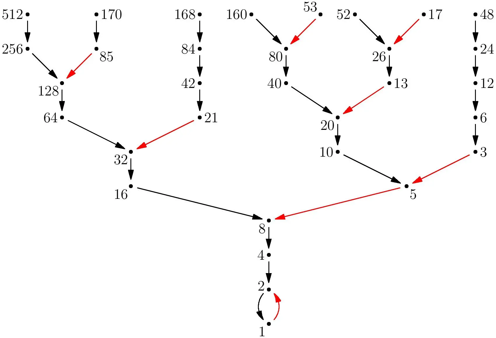

A Collatz-sejtés
A Collatz sejtés egy máig megoldatlan matematikai probléma, amely azt allítja, hogy bármély pozitív egész értéket megadva, 3n+1 rekurzívan mindig 4, 2, és 1re végződik, például:

A probléma:
...ahol n egy pozitív egész szám.
Ez a példa-program kiírja a megkapott értékeket és hogy mennyiszer sikerült az operáció egy rekurzíó elérése előtt. Azonnal megfog állni, amikor az eredmény egyenlő 1-gyel.
n =
Folyamatábra (nem teljesen egyezik a kóddal!)

Mivel a collatz sejtés esetében egy páros érték megadásánál megfeleződik az érték, és azután ujrakezdődik a ciklus, bármély megadott érték mindig dekrementál.
Emiatt teknikailag nem megoldatlan probléma; mivel minden eséllyel ugyan azzal a végződő páros 4, 2, és páratlan 1-gyel fog végződni.
További információ: Wikipédia